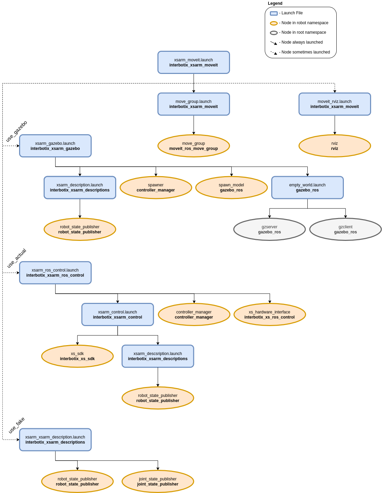

MoveIt Configuration
 View Package on GitHub
View Package on GitHub
Overview
This package contains the necessary config files to get any of the many Interbotix X-Series arms
working with MoveIt. Originally, the MoveIt Setup Assistant wizard was used to generate a MoveIt
package for each robot individually. The packages were then all merged into one and the launch
files modified so that specific arguments (like robot_model, dof, and robot_name) could
be passed down to load the right config files (such as the SRDFs). Additionally, this package makes
use of the FollowJointTrajectory interface which seems to work pretty well in both Gazebo and on
the physical robot. A ‘master’ launch file was then written to allow a user to choose whether to
have MoveIt work with the simulated version, the physical robot hardware, or a MoveIt generated
fake robot.
Structure
As shown above, this package builds on top of the interbotix_xsarm_gazebo, interbotix_xsarm_control, and interbotix_xsarm_descriptions packages. To get familiar with those packages, please refer to their documentation. Regarding the MoveIt specific nodes, they are described below:
- move_group - responsible for planning the trajectories needed to achieve a particular arm/gripper pose
- rviz - responsible for showing the robot model and including the MoveIt MotionPlanning plugin
Usage
To run this package on the physical robot, type the line below in a terminal (assuming the
PincherX-100 is being launched). Note that if you’re using a 5 or 6 dof arm, you should set the
dof launch file argument appropriately.
$ roslaunch interbotix_xsarm_moveit xsarm_moveit.launch robot_model:=px100 use_actual:=true dof:=4
If running this package on a Gazebo simulated robot, type the line below in a terminal (assuming the ReactorX-200 is being launched). Don’t forget to unpause the Gazebo physics afterwards or MoveIt will never load!
$ roslaunch interbotix_xsarm_moveit xsarm_moveit.launch robot_model:=rx200 use_gazebo:=true
If running this package on a MoveIt generated fake robot, type the line below in a terminal (assuming the WidowX-250 is being launched).
$ roslaunch interbotix_xsarm_moveit xsarm_moveit.launch robot_model:=wx250 use_fake:=true
This is the bare minimum needed to get up and running. Take a look at the table below to see how to further customize with other launch file arguments.
| Argument | Description | Default Value |
|---|---|---|
| robot_model | model type of the Interbotix Arm such as ‘wx200’ or ‘rx150’ | “” |
| robot_name | name of the robot (typically equal to robot_model, but could be anything) |
$(arg robot_model) |
| base_link_frame | name of the ‘root’ link on the arm; typically ‘base_link’, but can be changed if attaching the arm to a mobile base that already has a ‘base_link’ frame | base_link’ |
| show_ar_tag | if true, the AR tag mount is included in the ‘robot_description’ parameter; if false, it is left out; set to true if using the AR tag mount in your project | false |
| use_world_frame | set this to true if you would like to load a ‘world’ frame to the ‘robot_description’ parameter which is located exactly at the ‘base_link’ frame of the robot; if using multiple robots or if you would like to attach the ‘base_link’ frame of the robot to a different frame, set this to false | true |
| external_urdf_loc | the file path to the custom urdf.xacro file that you would like to include in the Interbotix robot’s urdf.xacro file | “” |
| external_srdf_loc | the file path to the custom srdf.xacro file that you would like to include in the Interbotix robot’s srdf.xacro file. Note that this should only contain ‘disable collision’ tags for collisions between the original Interbotix Arm and other links that are defined in the file specified by external_urdf_loc |
“” |
| mode_configs | the file path to the ‘mode config’ YAML file | refer to xsarm_moveit.launch |
| use_moveit_rviz | a boolean that if true, displays RViz with the MoveIt plugin; if false, MoveIt runs in a headless state | true |
| rviz_frame | defines the fixed frame parameter in RViz. Note that if ‘use_world_frame’ is False, this parameter should be changed to a frame that exists | world |
| use_gazebo | launch MoveIt with a Gazebo simulated robot | false |
| use_actual | launch MoveIt with the physical robot | false |
| use_fake | launch MoveIt with a MoveIt generated fake robot | false |
| dof | the degrees of freedom of the arm; while the majority of the arms have 5 dof, others have 4 or 6 dof | 5 |
| world_name | the file path to the Gazebo ‘world’ file to load (if simulating) | refer to xsarm_moveit.launch |
Notes
Once the MoveIt GUI is fully loaded, take a look at the available planning groups. There should be two of them - one called ‘interbotix_arm’ and the other called ‘interbotix_gripper’. The ‘interbotix_arm’ group contains the joints needed to plan the trajectories for the whole arm (excluding the gripper) while the ‘interbotix_gripper’ group contains the joints needed to plan the trajectories for the gripper (based on the linear distance from the ‘left_finger_link’ to the ‘fingers_link’). There are a few saved poses for each of these groups that be executed such as ‘home’, ‘sleep’, and ‘upright’ poses for the ‘interbotix_arm’ group, and ‘open’, ‘close’, and ‘home’ for the ‘interbotix_gripper’ group (‘home’ just moves the gripper such that the angular position of the motor is at 0 radians). Also, it should be noted that the gripper frame of reference is located at the ‘ee_gripper_link’.
Additionally, by default, the MoveIt GUI does not display the green or orange robots that represent the start and goal states for the arm respectively. To display them, navigate to the MotionPlanning -> Planning Request dropdown in RViz and check the Query Start State and Query Goal State checkboxes.